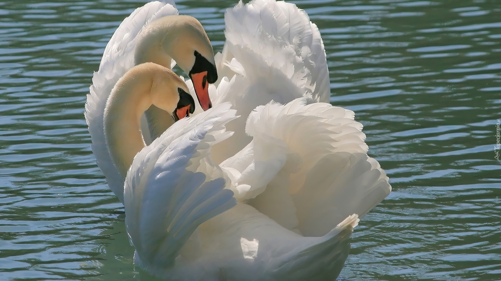
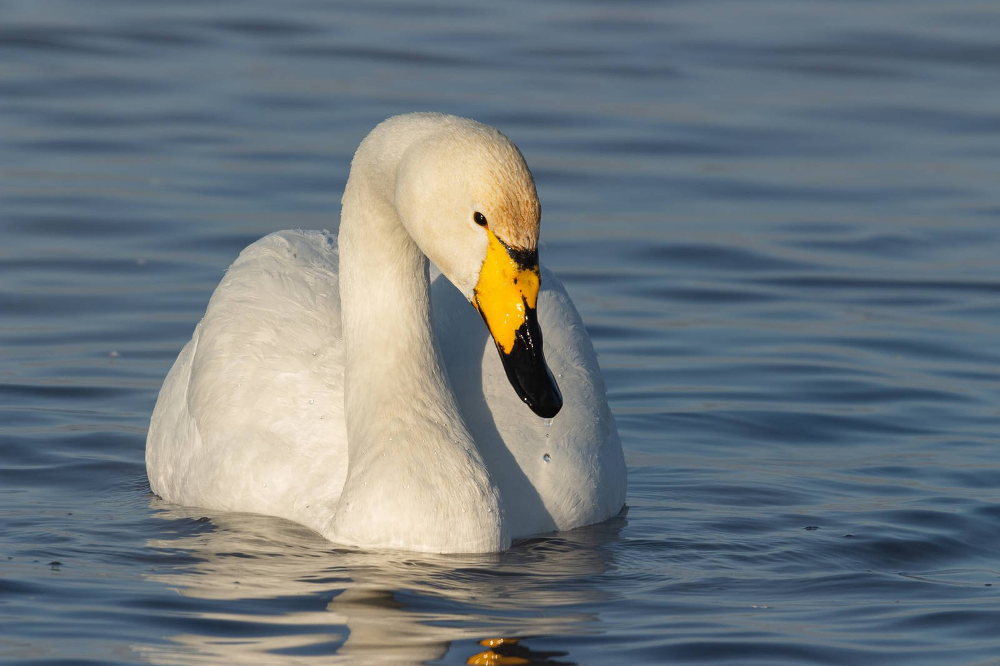
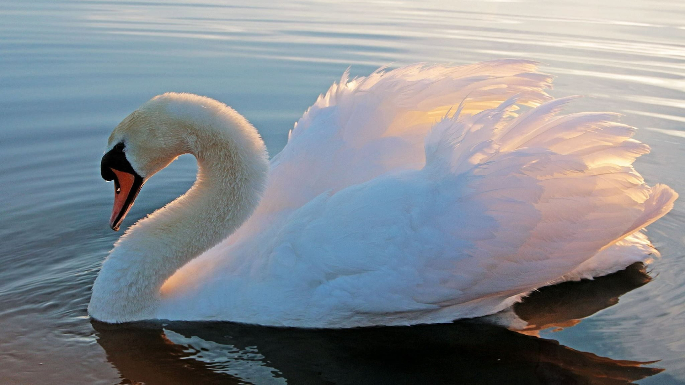
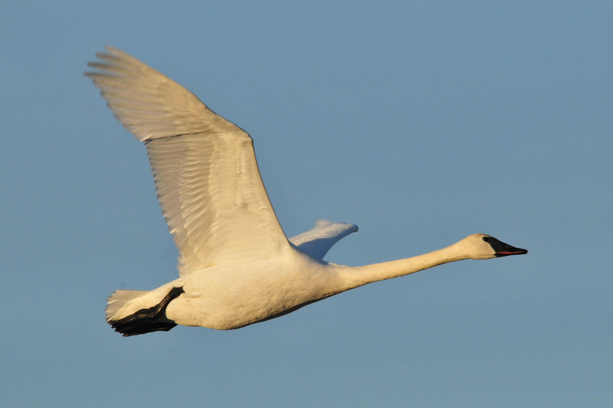
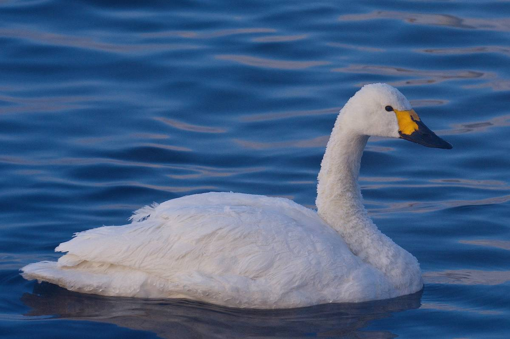
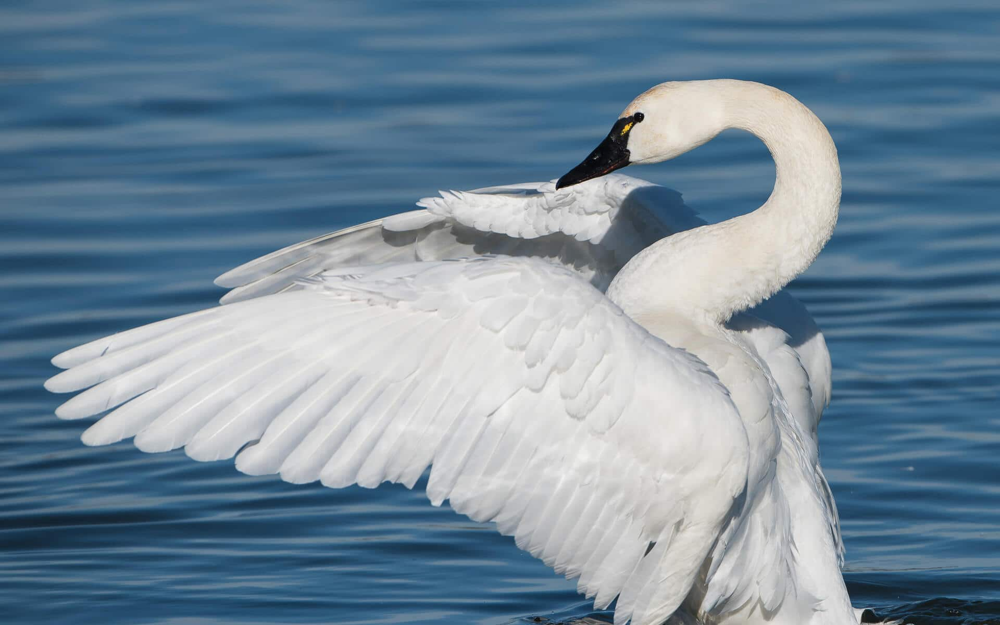
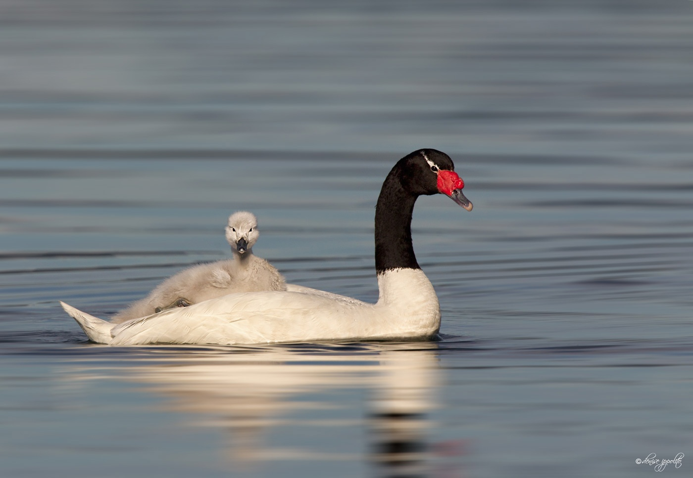
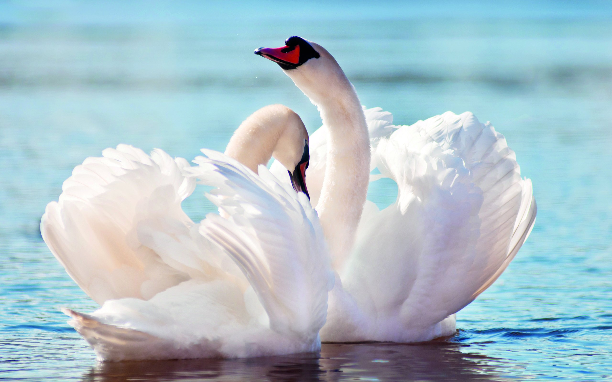

Описание

Лебеди отличаются тем от других видов птиц, что они на протяжении тысячелетий занимают особое место в жизни человека. На протяжении всей жизнедеятельности, человек восхищался многими уникальными качествами этих птиц. И это неудивительно, поскольку лебеди – это горделивые и величественные птицы, наделенные от природы красотой и грациозностью. Лебединая верность послужила источником для пересказывания легенд, а также написания песен, рассказов, сказок и т.д.
Лебеди представляют крупных водоплавающих птиц, которые относятся
к семейству «утиные» и к отряду «гусеобразные». На Земле осталось
всего семь разновидностей подобных птиц, причем 10 видов вымерло.
Получается, что было порядка 17 видов, часть которых исчезла и
конечно же не без участия человека. Лебеди отличаются еще и тем,
что имеют уникальную расцветку оперения, состоящую из белых,
черных и серых оттенков. Лебеди – птицы, которые впечатляют своим
характером и образом жизни. Они проводят большую часть времени на
воде, на озерах с камышовыми зарослями, где плавают медленно,
величаво, уверенно, словно главные герои природного мира. Их белое
оперение не оставляет равнодушными путников, которые могут
наблюдать за этими красивыми птицами в глухих местах, где они сами
себе хозяева.
Но в природе опасности настигают всех, и лебеди не исключение.
Беркуты и речные скопы могут напасть на гордых птиц, но лебеди
могут развивать большие скорости на плаву или бежать по воде на
взлете и шлепать лапами по водной глади. Они гордые и не терпят
рядом соседей, защищают свою территорию и не пускают чужаков.
Когда пернатые чувствуют, что их покой нарушают и облюбованный
участок обитания в опасности, они могут проявить агрессивное
поведение, используя свои крылья и клюв как оружие. Удар крылом
птицы может быть настолько сильным, что способен сломать руку
человеку. Лебеди обычно выбирают тихие и удаленные места для
проживания, но иногда селятся на территории вблизи от проживания
человека. Это знак того, что здесь птиц защищают и подкармливают,
и только полная безопасность и комфорт обитания может смирить
лебедей с соседями.
Черные лебеди обладают самым миролюбивым характером, а белые шипуны – самые задиристые.

Кликун
Лебеди-кликуны

Шипун
Лебеди-шипуны
Интересный факт! Свое название птица получила из-за того,
что в случае опасности, когда кто-то пытается к ней приблизиться,
она издает грозное шипение.

Трубач
Лебеди-трубачи

Малый
Малый лебедь

Американский
Американский лебедь
Американские лебеди отличаются тем, что у них на клювах уникальный, неповторимый рисунок, как отпечатки пальцев у людей.

Черный
Черный лебедь

Черношейный
Черношейный лебедь
А знали ли вы что...?
- Лебеди - самые крупные водоплавающие птицы Европы. Вес взрослого лебедя может достигать 15 кг, а размах крыльев до 2.4 метра.
- Тело взрослого лебедя покрывает около 25 000 перьев. Лебеди считаются рекордсменами по количеству перьев среди птиц. Во время сезонной линьки лебеди на некоторое время теряют способность к полету.
- Ударом крыла лебедь может нанести травмы противнику или даже убить нападающего мелкого пернатого хищника.
- Из-за большого веса лебедю требуется разбег перед взлетом.
- Лебеди - рекордсмены по высоте полета. Был зафиксирован факт, когда птицы летели на высоте 8200 метров. Средняя высота полета лебедей 2500 метров.
- Лебеди - птицы моногамные, пару создают один раз и на всю жизнь. Однако, если один партнер погибает, то второй через какое-то время создает новую пару, а не кончает жизнь самоубийством, как описано в песне "Лебединая верность".
- Лебеди - территориальные птицы и очень рьяно охраняют границы своих "владений" в период гнездования.
- Гнездо лебедя может достигать в диаметре до 2 метров. Строительством гнезда занимается самка, а самец обеспечивает ее стройматериалами.

- Насиживает кладку только самка. Если она отходит от гнезда, то самец занимается его охраной, но на кладку не садится.
- Свох птенцов лебеди-родители опекают первые 1-2 года жизни.
- Молодые лебеди имеют невзрачное серое оперение. Меняется серый пух на взрослое перо тогда, когда птенец достигнет примерно половину размера взрослой птицы. Вспомните сказку Андерсена про гадкого утенка, превратившегося в прекрасного лебедя.
- Черные лебеди могут составлять пару из двух самцов. Самку используют лишь для откладывания яиц. Потом ее прогоняют и дальше два самца насиживают и выращивают птенцов сами.
- Во время миграций лебеди образуют V-образный клин. Ведет клин вожак стати, за ним летят самые сильные птицы. В конце клина летят более слабые птицы и молодняк. Парвые летящие птицы взмахами крыльев образуют восходящую струю воздуха, что помогает лететь более слабым членам стаи. Если кто-то ослаб и не может лететь, то вся стая ждет, пока заболевший наберется сил и сможет продолжить полет.
- В полете лебеди могут развивать скорость до 80 км/час.
- В дикой природе лебеди живут 20-30 лет, в зависимости от вида.
- Лебедь-кликун - национальная птица Финляндии.
- Лебедь-шипун - национальная птица Дании.
- Черный лебедь - эмблема Западной Австралии.
- В Великобритании лебеди-шипуны объявлены королевской собственностью и охота на них запрещена.
- У якутов лебедь считается тотемным животным. У айнов были легенды о том, что челорвек произошел от лебедя. Монголы были уверены, что первые люди на Земле были сделаны из лебединых лап.